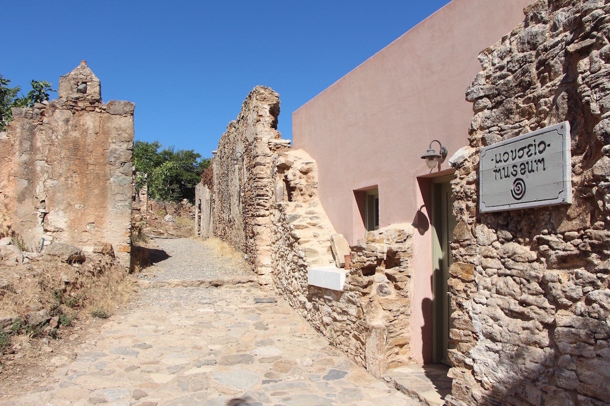
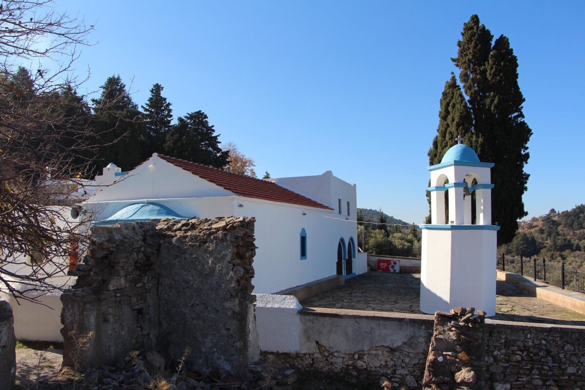
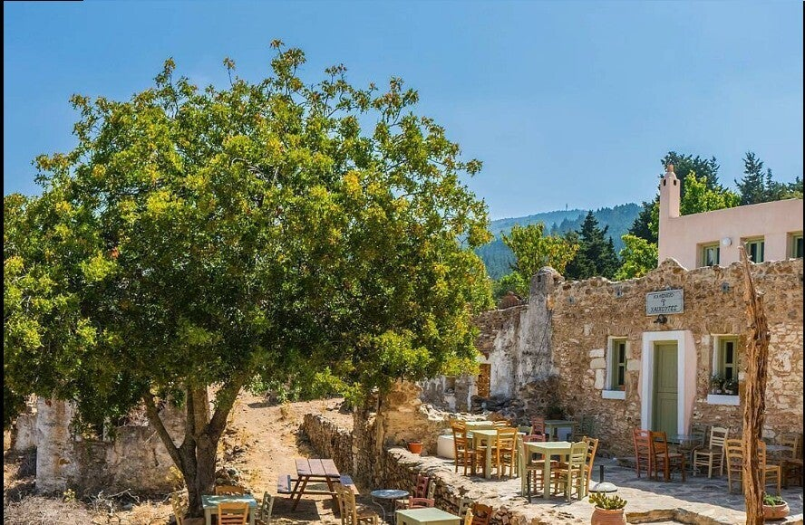

Voormalig bergdorp (± 1780) – eerste school van Kos, schuilplaats in WO II, nu weer levend met kafeneio en sfeer van een openluchtmuseum.
Bergdorp met geschiedenis
Haihoutes is een klein, voormalig bergdorp. Rond 1780 vestigden zich hier de eerste bewoners, onder wie een Armeense familie Haihoudes.
Eerste school van Kos
De allereerste school van het eiland begon hier, in de kerk van Agios Dimitrios (nog steeds op de berg). Toen zo’n 40 tot 50 leerlingen.
WO II en leegloop
Tijdens de Tweede Wereldoorlog vonden veel mensen uit Kos-stad hier een schuilplaats. In de jaren 1960–1970 vertrokken de laatste inwoners; het dorp werd een spookdorp.
Weer tot leven
Sinds enkele jaren is Haihoutes weer levend: een traditioneel kafeneio, smalle paadjes, oude stenen huizen en overal groen – bijna als een openluchtmuseum.
 Haihoutes
Haihoutes

Haihoutes
Haihoutes
HaihoutesBezoeken
Gratis. Ideaal voor rust en sfeer.
Tip: drink iets in het kafeneio en geniet van de stilte – het voelt als een filmset.